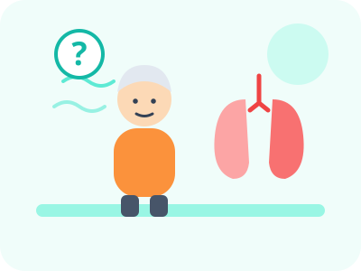

Gold Award
WICO 2026 · โซล เกาหลีใต้ · 16–18 ก.ค. 2026
จัดโดย KUIPA · ยกย่องด้านการนำเสนอยอดเยี่ยม ความคิดสร้างสรรค์ และนวัตกรรม
SmartLung
เครื่องฝึกกล้ามเนื้อหายใจพร้อมระบบติดตามผลระยะไกล ส่งแข่ง 2 เวทีนานาชาติ ได้รับ 3 รางวัล
ABSTRACT · บทคัดย่อ
SmartLung: An Intelligent Respiratory Muscle Training and Remote Monitoring Platform for the Elderly คือเครื่องฝึกกล้ามเนื้อหายใจที่มีหน้าจอและเซนเซอร์วัดผล ทำงานร่วมกับเว็บแดชบอร์ดให้ผู้ดูแลและบุคลากรทางการแพทย์ติดตามผู้ใช้จากระยะไกล และพร้อมนำไปต่อยอดในระบบสาธารณสุข
SmartLung is a respiratory muscle training device with a built-in display and sensor, paired with a web dashboard for remote monitoring by caregivers and clinicians. It is designed to be ready for public healthcare use.
วัตถุประสงค์

ปัญหาที่เจอ
ผู้สูงอายุที่ปอดและกล้ามเนื้อหายใจอ่อนแรงต้องฝึกหายใจให้ถูกวิธีและสม่ำเสมอ แต่เมื่อฝึกที่บ้าน ผู้ดูแลและแพทย์มองไม่เห็นว่าฝึกได้จริงหรือไม่
→ เราจึงทำ SmartLung — เครื่องฝึกที่วัดผลได้เอง และส่งข้อมูลให้ดูผ่านเว็บแดชบอร์ดจากระยะไกล
แนวทางและการออกแบบ
ผู้ใช้ฝึกหายใจ
ฝึกกับเครื่อง พกพาได้
เซนเซอร์และหน้าจอ
วัดผลและแสดงบนเครื่อง
ส่งข้อมูลขึ้นเว็บ
เครื่องส่งผลให้อัตโนมัติ
ติดตามผลระยะไกล
ผู้ดูแล/แพทย์ดูแดชบอร์ดผู้ป่วย
รางวัล
WICO 2026 · โซล เกาหลีใต้ · 16–18 ก.ค. 2026
จัดโดย KUIPA · ยกย่องด้านการนำเสนอยอดเยี่ยม ความคิดสร้างสรรค์ และนวัตกรรม
iCAN 2026 · การแข่งขันออนไลน์ · ส.ค. 2026
การแข่งขันสิ่งประดิษฐ์นานาชาติ ครั้งที่ 11 จัดโดยสมาคมนวัตกรรมแห่งโตรอนโต
ในการแข่งขัน iCAN 2026 · 29 ส.ค. 2026
รางวัลพิเศษยกย่องสิ่งประดิษฐ์/นวัตกรรมที่ยอดเยี่ยม
ตัวผลงาน
แพลตฟอร์มฝึกกล้ามเนื้อหายใจอัจฉริยะและติดตามผลจากระยะไกล สำหรับผู้สูงอายุ ตัวเครื่องมีหน้าจอสัมผัส ปุ่มปรับระดับแรงต้าน และช่องต่อท่อหายใจ ออกแบบโมเดล 3 มิติก่อนสร้างจริง
คลิปนำเสนอ
แนะนำปัญหา ตัวเครื่องจริง (ส่วนจอแสดงผลและเซนเซอร์) และเว็บแดชบอร์ดสำหรับติดตามผู้ป่วย — มีคำบรรยายภาษาอังกฤษ
บรรยากาศหน้างาน
ไปนำเสนอผลงานด้วยตัวเองที่งาน World Invention Creativity Olympic ครั้งที่ 15